Alt dukomentation er skrevet direkte i Notepad++, og uploadet til serveren efter hvert modul.
Målgruppen er meget bred, alle med lidt IT forståelse, og en computer med YouTube / denne vejledning. Ellers kender de fleste en bekendt, som har forstand på computere og dens opsætning.
Det er ikke altid ting, som ikke virker er i stykker.
Kom/It, Engelsk og Dansk. Vi har læste og set en masse stof / videoer derved kommer vores viden fra både dansk og engelsk.
Jonas går på HTX i Roskilde, og har en stationær, som ikke virker der hjemme. Der sider både stik i Computeren og til skærmen.
Kort beskrivelse af computerhardware. Vi har udvalgt så få og specifike, men når at komme omkring de vigtigeste komponenter.
Et bundkort eller motherboard, som det heder på engelsk, er computerens rygrad. Bundkortet er den centrale enhed i alle computere, via bordkortet tilsluttes CPUen, RAM, harddisken, grafikkort, lydkort osv. Ekstern hardware såsom printer, mus, tastatur, USB-enheder tilsluttes på bundkortet i passende sokler (stik), som er loddet på bundkortet. Ofte er der dog placeret stik på forsiden af kabinettet, hvor bundkortet sider i.
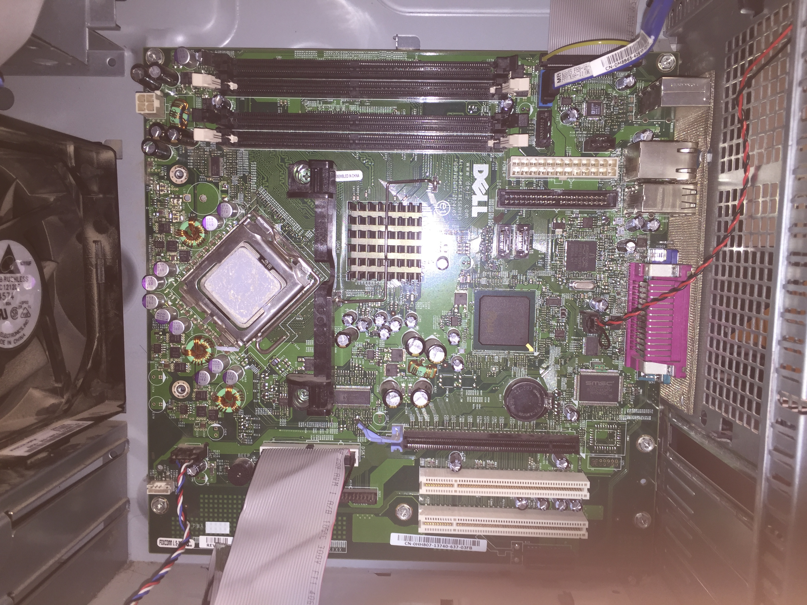Processor og så kaldt Central Processing Unit er den centrale regneenhed i en computer og den omtales af mange som computerens hjerne. Mange gange bruger, brugerne dem til
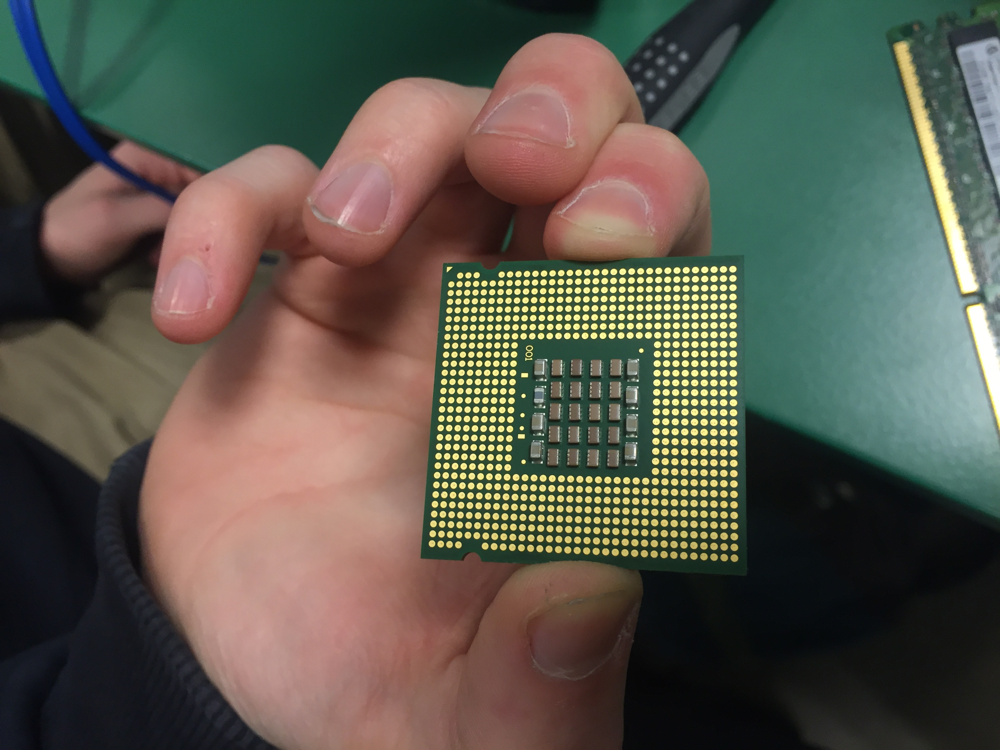 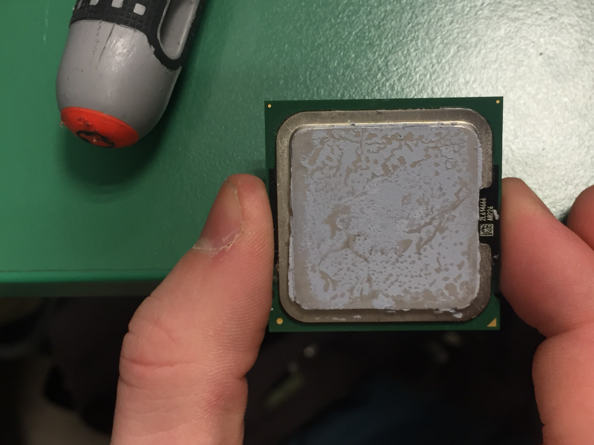Hukommelse (RAM), er det sted i en computer, hvor styresystemkomponenter, computerprogrammer og anden data der bliver brugt meget bliver opbevaret, så der er hurtig adgang til dem. Lige som en hurtig Harddisk/SSD.
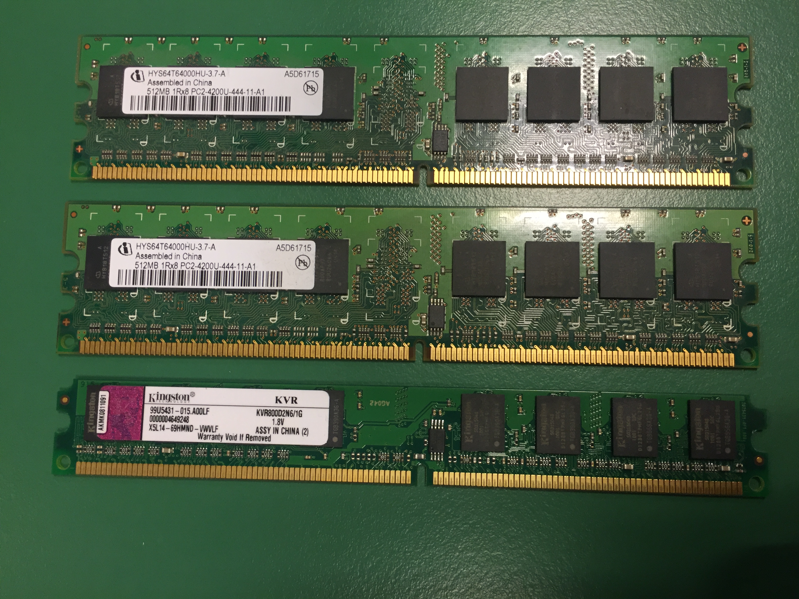Alle former for legering, bruges til at lager filer, programmer, operativsystem osv. Mange tror at harddisken er computeren, især gamle mennesker, hvor andre tror at skærmen er computeren, det er det ikke. Det vil altid være undtagelser, hvor computerne er en (all-in-one), hvor det kort sagt er en skærm med en pc på bagsiden af den.

Strømforsygningen i en computer giver størm til hele systemet. Det er også stedet hvor hoved strømstikker går til computeren.
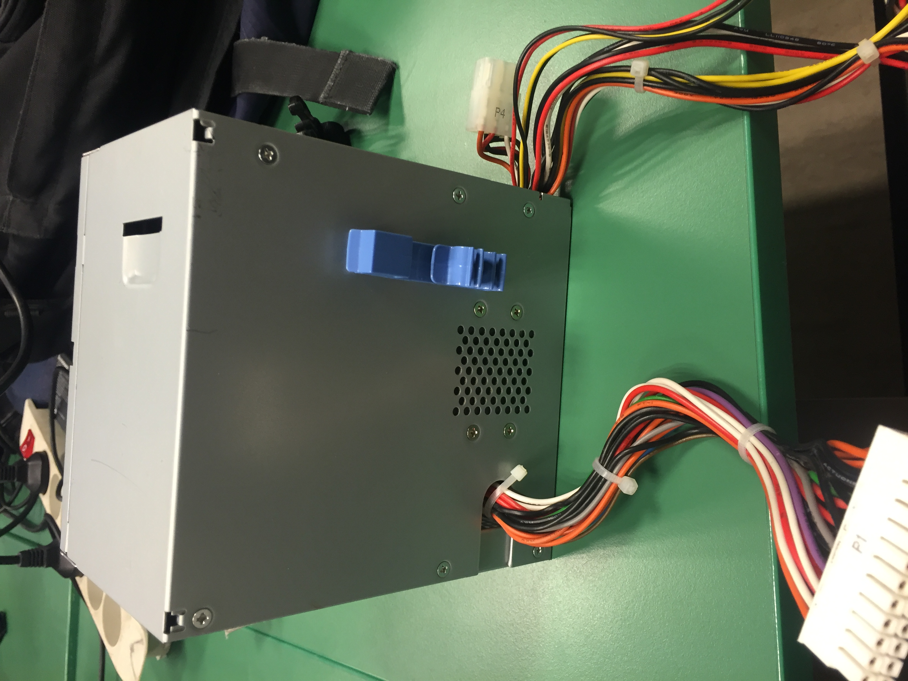Kabinetter ofte bygget af metal, et af formålene ved at bruge metallisk materiale, er bla. At afskærme radiostøj da bundkort bruger høje frekvenser. Sådan så din computer ikke forstyrrer TV, Radio osv.
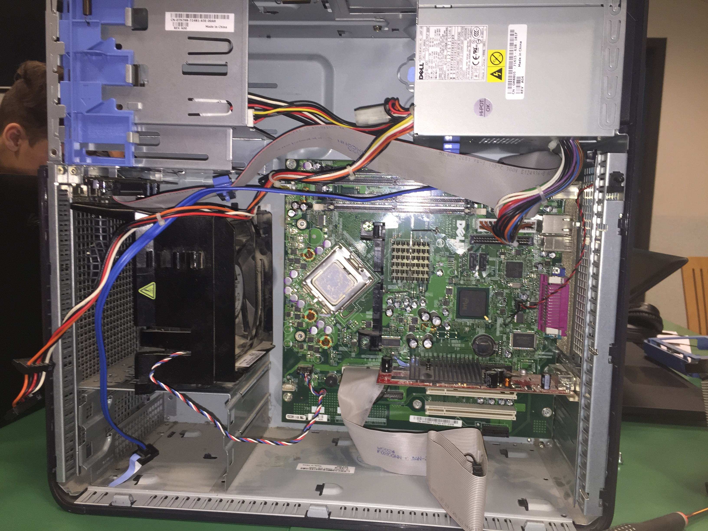En computer fan er en hvilken, som helst fan inde i computeren eller sat på computeren. Disse blæsere bruges til at nedkøle diverse elementer i computeren.
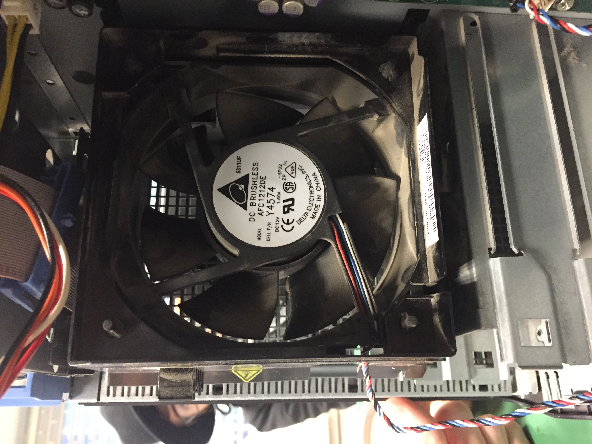DVD også kaldet optical disc drive (ODD) er et drev der bruger laserlys eller electromagnetik til at læse en cd eller dvd disk.
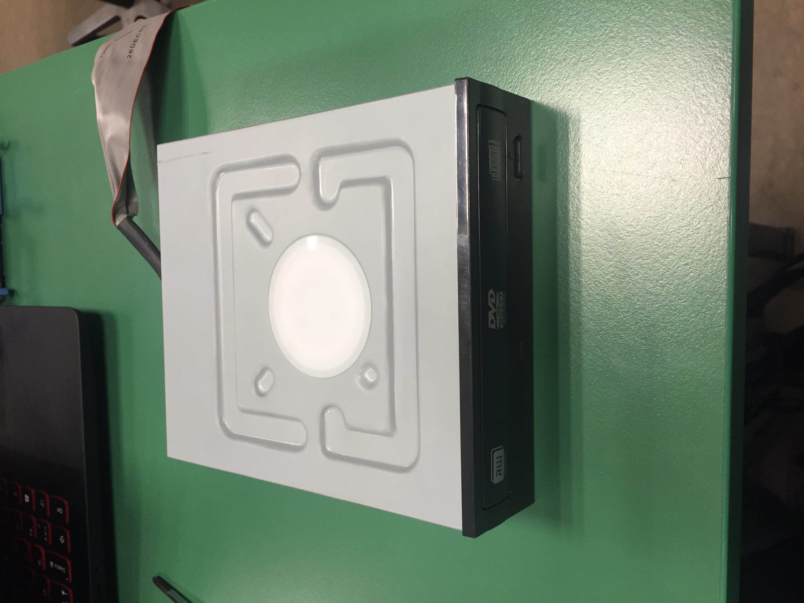Grafikkortet er en grafisk procecor, der hjælper computeren til at fremstille grafik, som brugeren / personen der bruger computeren kan se. Grafikkortet bruges tit til brugere der spiller spil, streamer højt opløsning eller fremstiller spil, film eller andre programmer.
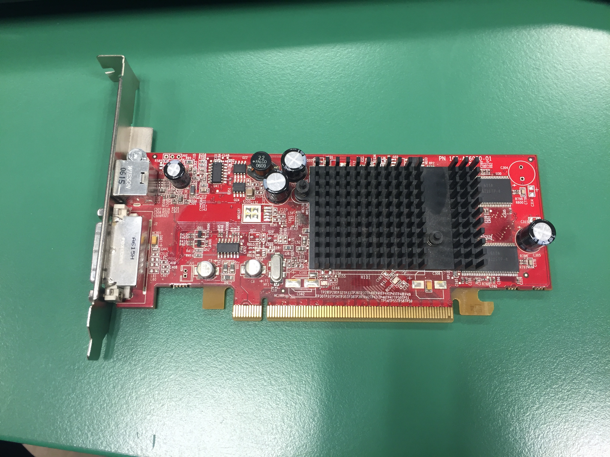 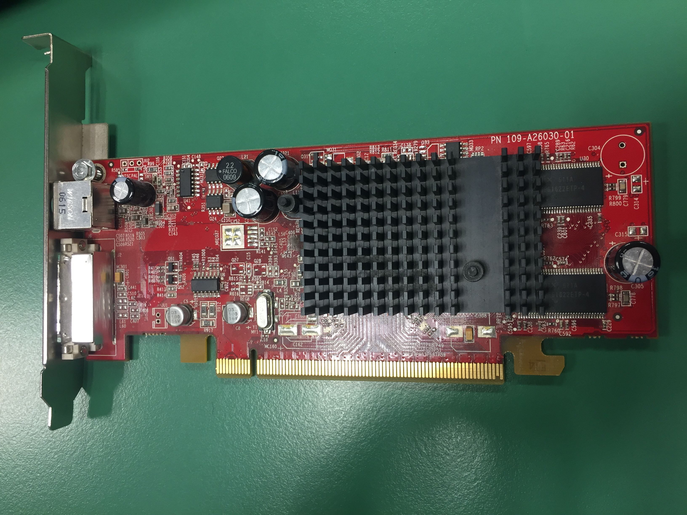Et lydkort er et udvidelseskort til computere det tillader lydsignaler til og fra en computer.
Et netkort er den fuktion som gør din computer i stand til at kommunikere via nettet.
 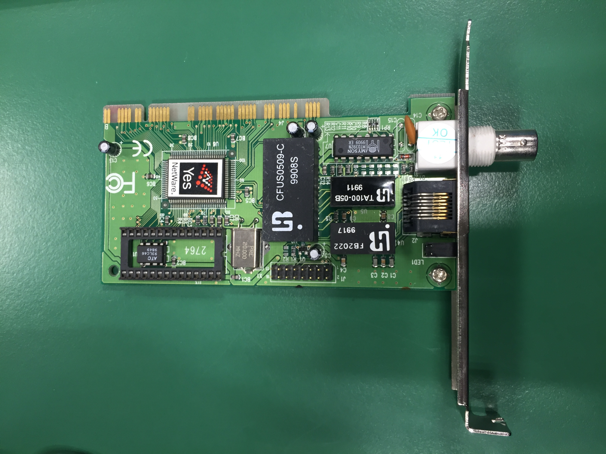
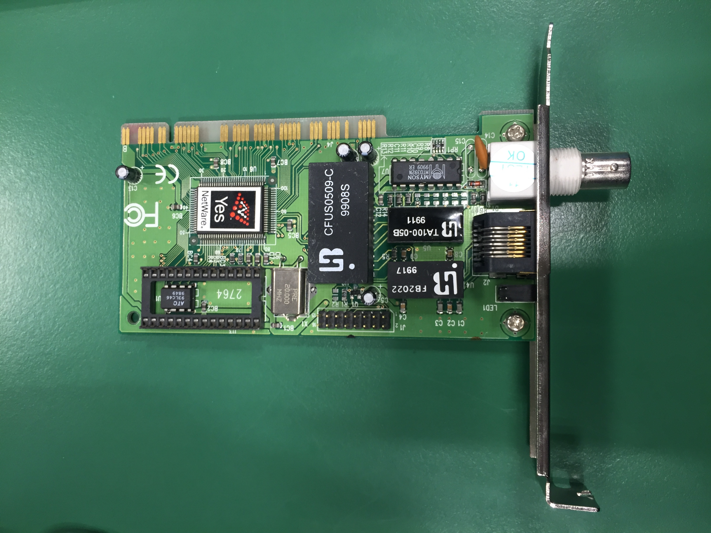
Vi skelede næsten hele computeren af, for at finde fejlen og rense den, efter at være nede til kun bundkortet, så vi et stik sad løst, som gik op til størmforsyningen(Som set på billedet undenfor). Vi sat alle komponenterne i computeren igen, og prøvet at starte den. Det lykkedes heldigvis, og computeren virkede som den skulle.
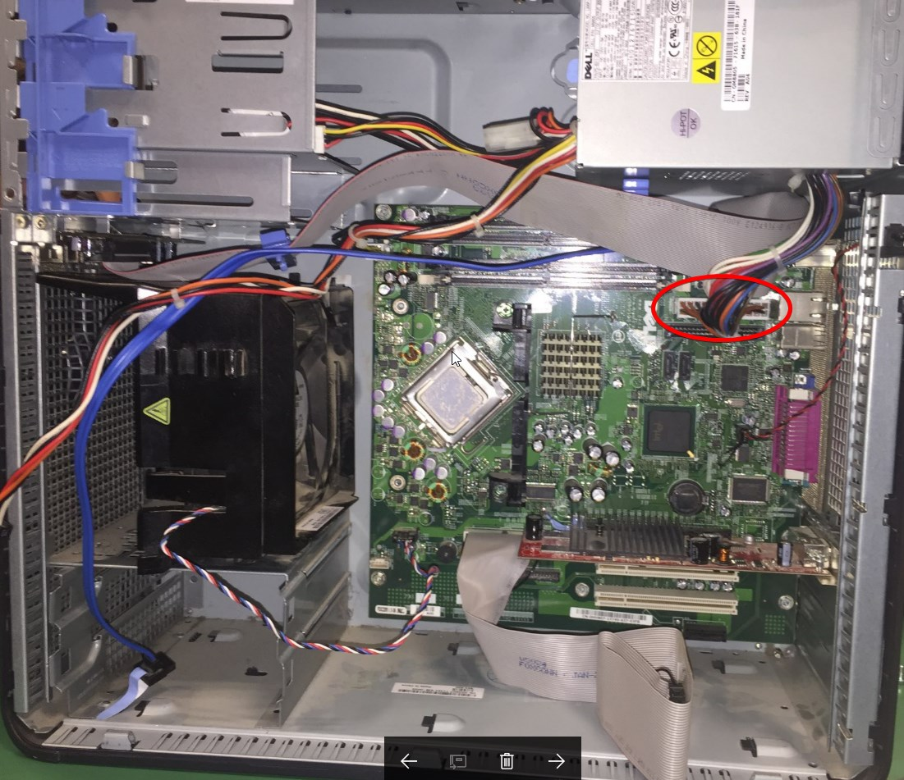Vi satte sidepanelerne og frontpanelet på, satte den ordentligt op, så den stod korrekte i forhold til hvor den skulle stå, og testede den igen for at tjekke sidste gang om den virker. Det lykkedes heldigvil og nu er computeren også ren.